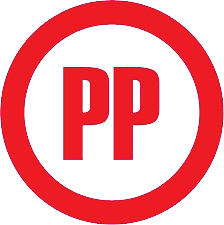

<div class="container-fluid">
    <button class="navbar-toggler" type="button" data-bs-toggle="collapse" data-bs-target="#sidebar-menu" aria-controls="sidebar-menu" aria-expanded="false" aria-label="Toggle navigation">
    <span class="navbar-toggler-icon"></span>
  </button>
    <h1 class="navbar-brand navbar-brand-autodark d-flex justify-content-center align-items-center">
        
    </h1>
    <div class="collapse navbar-collapse" id="sidebar-menu" *ngIf="dataObject && dataObject.isAuthenticated">
        <ul class="navbar-nav pt-lg-3">
            <li class="nav-item" routerLinkActive="active" [routerLinkActiveOptions]="{ exact: true }" *appHasClaim="'CanAccessInicio'" (click)="cerrarMenu()">
                <a class="nav-link" [routerLink]="['inicio']">
                    <span class="nav-link-icon d-md-none d-lg-inline-block">
            <i class="ti ti-home"></i>
          </span>
                    <span class="nav-link-title">Inicio</span>
                </a>
            </li>
            <li class="nav-item dropdown" *appHasClaim="'canAccessAdministracion'" [ngClass]="{
          active:
            (rlDashboard && rlDashboard.isActive) ||
            (rlUsuarios && rlUsuarios.isActive) ||
            (rlProgramasSociales && rlProgramasSociales.isActive) ||
            (rlAreas && rlAreas.isActive)
        }">
                <a class="nav-link dropdown-toggle" [routerLink]="" data-bs-toggle="dropdown" data-bs-auto-close="false" role="button" aria-expanded="true">
                    <span class="nav-link-icon d-md-none d-lg-inline-block">
            <i class="ti ti-shield"></i>
          </span>
                    <span class="nav-link-title"> Administración </span>
                </a>
                <ul class="dropdown-menu show">
                    <div class="dropdown-menu-columns">
                        <div class="dropdown-menu-column">
                            <a *appHasClaim="'CanAccessDashboard'" class="dropdown-item" [routerLink]="['dashboard']" routerLinkActive="active" #rlDashboard="routerLinkActive" (click)="cerrarMenu()">
                                <span class="nav-link-icon d-md-none d-lg-inline-block">
                  <i class="ti ti-chart-infographic"></i>
                </span>
                                <span class="nav-link-title">Tablero</span>
                            </a>
                            <a *appHasClaim="'CanAccessUsuarios'" class="dropdown-item" [routerLink]="['usuarios']" routerLinkActive="active" #rlUsuarios="routerLinkActive" (click)="cerrarMenu()">
                                <span class="nav-link-icon d-md-none d-lg-inline-block">
                  <i class="ti ti-users"></i>
                </span>
                                <span class="nav-link-title">Usuarios</span>
                            </a>
                            
                            <a *appHasClaim="'CanAccessAreas'" class="dropdown-item" [routerLink]="['areas']" routerLinkActive="active" #rlAreas="routerLinkActive" (click)="cerrarMenu()">
                                <span class="nav-link-icon d-md-none d-lg-inline-block">
                  <i class="ti ti-building-community"></i>
                </span>
                                <span class="nav-link-title">Areas</span>
                            </a>
                            <a *appHasClaim="'CanAccessProgramasSociales'" class="dropdown-item" [routerLink]="['programas-sociales']" routerLinkActive="active" #rlProgramasSociales="routerLinkActive" (click)="cerrarMenu()">
                                <span class="nav-link-icon d-md-none d-lg-inline-block">
                  <i class="ti ti-social"></i>
                </span>
                                <span class="nav-link-title">Programas Sociales</span>
                            </a>
                        </div>
                    </div>
                </ul>
            </li>
            <li class="nav-item dropdown" *appHasClaim="'canAccessOperacion'" [ngClass]="{
          active:
          (rlVisitas && rlVisitas.isActive)  ||
            (rlMapaPromovidos && rlMapaPromovidos.isActive) ||
            (rlPromovidos && rlPromovidos.isActive)||
            (rlPropagandaElectoral && rlPropagandaElectoral.isActive) ||
            (rlMapaPropagandaElectoral && rlMapaPropagandaElectoral.isActive) ||
            (rlNubePalabras && rlNubePalabras.isActive)
        }">
                <a class="nav-link dropdown-toggle" [routerLink]="" data-bs-toggle="dropdown" data-bs-auto-close="false" role="button" aria-expanded="true">
                    <span class="nav-link-icon d-md-none d-lg-inline-block">
            <i class="ti ti-settings-pin"></i>
          </span>
                    <span class="nav-link-title">Operacion</span>
                </a>
                <ul class="dropdown-menu show">
                    <div class="dropdown-menu-columns">
                        <div class="dropdown-menu-column">
                            <a *appHasClaim="'canAccessSimpatizantes'" class="dropdown-item" [routerLink]="['promovidos']" routerLinkActive="active" #rlPromovidos="routerLinkActive" (click)="cerrarMenu()">
                                <span class="nav-link-icon d-md-none d-lg-inline-block">
                  <i class="ti ti-user-exclamation"></i>
                </span>
                                <span class="nav-link-title">Promovidos</span>
                            </a>
                            <a *appHasClaim="'canAccessVisitas'" class="dropdown-item" [routerLink]="['visitas']" routerLinkActive="active" #rlVisitas="routerLinkActive" (click)="cerrarMenu()">
                                <span class="nav-link-icon d-md-none d-lg-inline-block">
                  <i class="ti ti-user-square"></i>
                </span>
                                <span class="nav-link-title">Visitas</span>
                            </a>
                            <a *appHasClaim="'canAccessMapaSimpatizantes'" class="dropdown-item" [routerLink]="['mapa-promovidos']" routerLinkActive="active" #rlMapaPromovidos="routerLinkActive" (click)="cerrarMenu()">
                                <span class="nav-link-icon d-md-none d-lg-inline-block">
                  <i class="ti ti-map-search"></i>
                </span>
                                <span class="nav-link-title">Mapa de Promovidos</span>
                            </a>
                            <a class="dropdown-item" *appHasClaim="'CanAccessPropaganda'" [routerLink]="['Propaganda-Electoral']" routerLinkActive="active" #rlPropagandaElectoral="routerLinkActive" (click)="cerrarMenu()">
                                <span class="nav-link-icon d-md-none d-lg-inline-block">
                  <i class="ti ti-wall"></i>
                </span>
                                <span class="nav-link-title">Propaganda Electoral</span>
                            </a>
                            <a class="dropdown-item" *appHasClaim="'CanAccessMapaPropaganda'" [routerLink]="['mapa-propaganda']" routerLinkActive="active" #rlMapaPropagandaElectoral="routerLinkActive" (click)="cerrarMenu()">
                                <span class="nav-link-icon d-md-none d-lg-inline-block">
                  <i class="ti ti-map-search"></i>
                </span>
                                <span class="nav-link-title">Mapa de Propaganda Electoral</span>
                            </a>
                            <a *appHasClaim="'canAccessNubePalabras'" class="dropdown-item" [routerLink]="['nube-palabras']" routerLinkActive="active" #rlNubePalabras="routerLinkActive" (click)="cerrarMenu()">
                                <span class="nav-link-icon d-md-none d-lg-inline-block">
                  <i class="ti ti-cloud-snow"></i>
                </span>
                                <span class="nav-link-title">Nube de palabras</span>
                            </a>

                        </div>
                    </div>
                </ul>
            </li>
        </ul>
    </div>
</div>